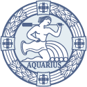

SKN Geoinformatyki
Studenckie Koło Naukowe Geoinformatyki na Uniwersytecie Przyrodniczym we Wrocławiu
Poznaj świat GIS'u, realizuj ciekawe projekty, podziel się swoimi pasjami!


Studenckie Koło Naukowe Geoinformatyki na Uniwersytecie Przyrodniczym we Wrocławiu
Poznaj świat GIS'u, realizuj ciekawe projekty, podziel się swoimi pasjami!
Najważniejsze wydarzenia na Uniwersytecie Przyrodniczym we Wrocławiu, zorganizowane przez SKN Geoinformatyki
W tegorocznych obchodach GIS Day na Uniwersytecie Przyrodniczym we Wrocławiu wzięło udział kilkaset osób. Na miłośników systemów informacji geograficznej czekały liczne atrakcje.
Studenci z Koła Naukowego Geoinformatyki w czasie sesji wykładowej zaprezentowali cztery projekty, nad którymi pracowali w ostatnich miesiącach. Dotyczyły one zastosowań skanowania lotniczego i zdjęć z UAV w pozyskiwaniu danych przestrzennych i kontroli istniejącego zasobu. Jedna ze studentek zaprezentowała też własną aplikację do raportowania zdarzeń w przestrzeni miejskiej. Reprezentanci wiodących firm pokazali najnowsze rozwiązania technologiczne w skanowaniu laserowym oraz GIS-ie on-line. Uczestnicy mieli możliwość wzięcia udziału w warsztatach GIS, modelowania 3D oraz pokazach sprzętu pomiarowego.
Regularne spotkania, mające na celu wykształcenie u uczestników projektu umiejetności posługiwania sie jezykiem C#. Zajęcia prowadzone sa od podstaw przez byłego studenta UP oraz członka SKN GI Adriana Kopczyńskiego.
Bezzałogowe statki powietrzne to przyszłość geodezji. O tym, że fotogrametria lotnicza może być przydatnym narzędziem do pozyskania danych przestrzennych, przekonali się studenci SKN Geoinformatyki.